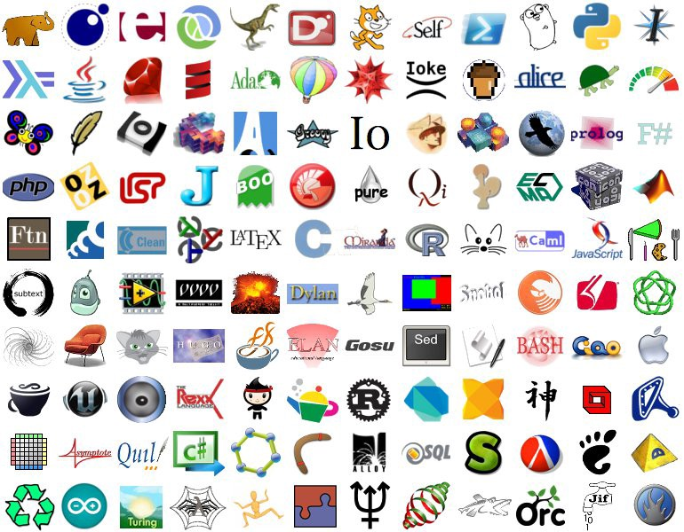

It all began with a simple learning project
something simple...
small, easy to finish...
what language should I use?


#sadness

What if found one language that is..
- Strongly typed
- Used on front end
- Also on the back end
- Provides great performance
Polyglot
pol·y·glot
/ˈpälēˌɡlät/
adjective
1. knowing or using several languages.
noun
1. a person who knows and is able to use several languages.
Polyglot (computing)
In computing, a polyglot is a computer program or script written in a valid form of multiple programming languages, which performs the same operations or output independent of the programming language used to compile or interpret it.
- wikipedia.org
Polyglot Framework
A programming framework or library that:
- Unifies a common API across multiple languages
- Compiles multiple languages into a single executable
- A single language that transpiles into multiple targets
- Andrew Grothe
Why?
Consolidate learning
Condense the stack
#happiness
Vert.x
- Unifies a common API across multiple languages